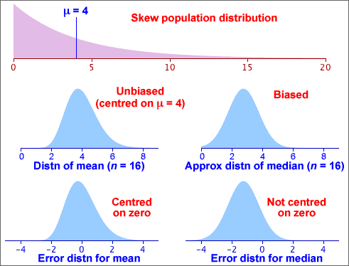

Biased estimators
In statistics, we mostly use estimators that are unbiased — their error distributions are centred on zero. However you may sometimes meet estimators that are biased — the mean of their error distribution (the bias) is not zero.
The diagram below shows the properties of the mean and median of samples of size n = 16 from a skew population distribution. The sample mean is an unbiased estimator of the population mean, µ, but the median is a biased estimator — it usually underestimate µ. (This should be no surprise since the median is less than the mean in skew data sets with a long right tail.)

Although bias is undesirable, a little bias may be acceptable in an estimator if its standard error is also small.